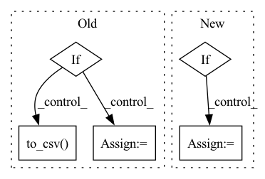

Pattern ID :11733
Before Change
optimizer = torch.optim.Adam(milnet.parameters(), lr=args.lr, betas=(0.5, 0.9), weight_decay=args.weight_decay)
scheduler = torch.optim.lr_scheduler.CosineAnnealingLR(optimizer, args.num_epochs, 0.000005)
if args.new_features == 0:
bags_csv = "datasets/tcga-dataset/TCGA.csv"
else:
luad_list = glob.glob("datasets"+os.sep+"wsi-tcga-lung"+os.sep+"LUAD"+os.sep+"*.csv")
lusc_list = glob.glob("datasets"+os.sep+"wsi-tcga-lung"+os.sep+"LUSC"+os.sep+"*.csv")
luad_df = pd.DataFrame(luad_list)
luad_df["label"] = 0
luad_df.to_csv("datasets/wsi-tcga-lung/LUAD.csv", index=False)
lusc_df = pd.DataFrame(lusc_list)
lusc_df["label"] = 1
lusc_df.to_csv( "datasets/wsi-tcga-lung/LUSC.csv", index=False)
bags_path = luad_df.append(lusc_df, ignore_index=True)
bags_path = shuffle(bags_path)
bags_path.to_csv("datasets/wsi-tcga-lung/TCGA.csv", index=False)After Change
optimizer = torch.optim.Adam(milnet.parameters(), lr=args.lr, betas=(0.5, 0.9), weight_decay=args.weight_decay)
scheduler = torch.optim.lr_scheduler.CosineAnnealingLR(optimizer, args.num_epochs, 0.000005)
if args.dataset == "TCGA-lung":
if args.new_features == 0:
bags_csv = "datasets/tcga-dataset/TCGA.csv"
else:
bags_csv = "datasets/wsi-tcga-lung/TCGA.csv"
else:
bags_csv = os.path.join("datasets", args.dataset, args.dataset+".csv")
bags_path = pd.read_csv(bags_csv)In pattern: SUPERPATTERN
Frequency: 3
Non-data size: 5
Instances Fragment ID: 39553979
Project Name: binli123/dsmil-wsi
Commit Name: 9679d9909a89006555a4d371274255f65ef695ac
Time: 2021-05-20
Author: bli346@wisc.edu
File Name: train_tcga.py
M Class Name: AnonimousClass
N Class Name: AnonimousClass
M Method Name: main(0)
N Method Name: main(0)
M Parent Class:
N Parent Class:
M File Name: train_tcga.py
N File Name: train_tcga.py
M Start Line: 129
M End Line: 165
N Start Line: 111
N End Line: 169
Before Change
os.mkdir(model_dir + "cytoimagenet")
hist_df = pd.DataFrame(history.history)
if weights is None:
model.save_weights(f"{model_dir}cytoimagenet/efficientnetb0_from_random.h5")
hist_df.to_csv(f"{model_dir}cytoimagenet/efficientnetb0_from_random(history).csv")
else:
model.save_weights(f"{model_dir}cytoimagenet/efficientnetb0_from_imagenet.h5")
hist_df.to_csv( f"{model_dir}cytoimagenet/efficientnetb0_from_imagenet(history).csv")
if __name__ == "__main__":
// LabelsAfter Change
plot_loss(history, weights, dset, split)
// Save model weights & history
if weights is None:
save_dir = f"{model_dir}cytoimagenet-weights/random_init/{dset}/"
else:
save_dir = f"{model_dir}cytoimagenet-weights/imagenet_init/{dset}/"
if not os.path.exists(save_dir):
os.mkdir(save_dir)
// Save training history Fragment ID: 39553983
Project Name: stan-hua/cytoimagenet
Commit Name: 58d66c4cc6eed607192ce85534d29f8f8ca9fee4
Time: 2021-08-23
Author: stanley.hua@mail.utoronto.ca
File Name: scripts/model_pretraining.py
M Class Name: AnonimousClass
N Class Name: AnonimousClass
M Method Name: main(0)
N Method Name: main(0)
M Parent Class:
N Parent Class:
M File Name: scripts/model_pretraining.py
N File Name: scripts/model_pretraining.py
M Start Line: 180
M End Line: 261
N Start Line: 239
N End Line: 331
Before Change
os.makedirs(ASSETS_DIR, exist_ok=True)
if (ASSETS_DIR / "tweet_emotion_probabilities.csv").exists():
preds = pd.read_csv(ASSETS_DIR / "tweet_emotion_probabilities.csv", index_col=0)
else:
preds = pd.read_csv(_PREDICTIONS_URL, index_col=0)
preds.to_csv( ASSETS_DIR / "tweet_emotion_probabilities.csv")
preds = preds.to_numpy()
if pred_format == "predictions":After Change
elif pred_format != "probabilities":
raise ValueError("pred_format must be either "predictions" or "probabilities"")
if as_train_test:
train_indexes, test_indexes = _get_train_test_indexes()
return all_preds[train_indexes], all_preds[test_indexes]
else:
return all_preds Fragment ID: 39553965
Project Name: deepchecks/deepchecks
Commit Name: 656d5fc64f48449ebedc84dc32330c0b34021803
Time: 2023-04-04
Author: 67195469+Nadav-Barak@users.noreply.github.com
File Name: deepchecks/nlp/datasets/classification/tweet_emotion.py
M Class Name: AnonimousClass
N Class Name: AnonimousClass
M Method Name: load_precalculated_predictions(2)
N Method Name: load_precalculated_predictions(1)
M Parent Class:
N Parent Class:
M File Name: deepchecks/nlp/datasets/classification/tweet_emotion.py
N File Name: deepchecks/nlp/datasets/classification/tweet_emotion.py
M Start Line: 166
M End Line: 178
N Start Line: 157
N End Line: 189